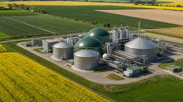
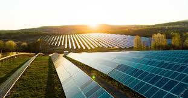
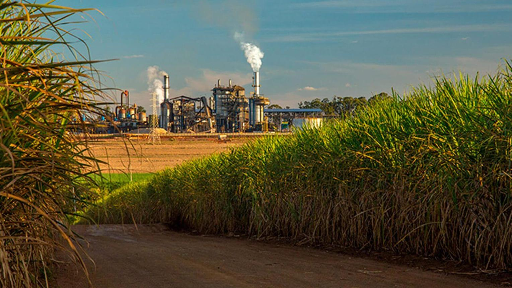

Conheça mais sobre Agroenergia

O que é Agroenergia?
A agroenergia é a produção de energia a partir de recursos agrícolas e resíduos orgânicos.

Biocombustíveis
Alternativas renováveis que ajudam a reduzir a emissão de gases poluentes.

Benefícios para o Futuro
Desenvolvimento econômico aliado à preservação ambiental.